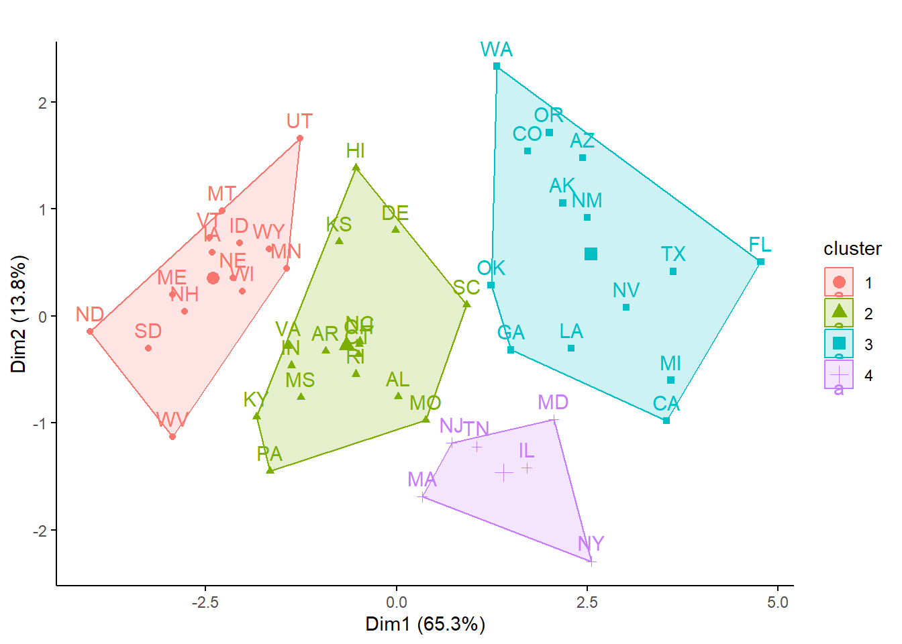

Raten von 7 Kriminalitätsformen pro 100000 Einwohner und Jahr für die Bundesstaaten der USA
(a) Führt eine k-means- Clusteranalyse durch.
(b) Überlegt bzw testet viele Cluster sinnvoll sind
(c) Abschliessend entscheidet euch für eine Clusterung und vergleicht die erhaltenen Cluster bezüglich der Kriminalitätsformen mittels ANOVA und interpretiert die Cluster entsprechend.
Hinweis: Wegen der sehr ungleichen Varianzen muss auf jeden Fall eine Standardisierung stattfinden, damit Distanzen zwischen den verschiedenen Kriminalitätsraten sinnvoll berechnet werden können
Bitte erklärt und begründet die einzelnen Schritte, die ihr unternehmt, um zu diesem Ergebnis zu kommen. Dazu erstellt bitte ein mit Quarto generiertes html-Dokument, in das ihr Schritt für Schritt den verwendeten R-Code, die dazu gehörigen Ausgaben von R, eure Interpretation derselben und die sich ergebenden Schlussfolgerungen für das weitere Vorgehen dokumentieren.
Formuliert abschliessend einen Methoden- und Ergebnisteil (ggf. incl. adäquaten Abbildungen) zu dieser Untersuchung in der Form einer wissenschaftlichen Arbeit (ausformulierte schriftliche Zusammenfassung, mit je einem Absatz von ca. 60-100 Worten, resp. 3-8 Sätzen für den Methoden- und Ergebnisteil). D. h. alle wichtigen Informationen sollten enthalten sein, unnötige Redundanz dagegen vermieden werden.
Zu erstellen sind (a) Ein quarto generiertes html-Dokument mit begründetem Lösungsweg (Kombination aus R-Code, R Output und dessen Interpretation) und (b) ausformulierter Methoden- und Ergebnisteil
Murder Rape Robbery Assault
Min. : 1.000 Min. :11.60 Min. : 7.0 Min. : 32.0
1st Qu.: 3.700 1st Qu.:23.27 1st Qu.: 67.0 1st Qu.:176.5
Median : 6.300 Median :30.10 Median :109.5 Median :248.0
Mean : 6.776 Mean :33.85 Mean :142.1 Mean :275.7
3rd Qu.: 9.275 3rd Qu.:43.45 3rd Qu.:202.8 3rd Qu.:366.0
Max. :13.500 Max. :72.70 Max. :514.0 Max. :605.0
Burglary Theft Vehicle
Min. : 385 Min. :1358 Min. : 99.0
1st Qu.: 894 1st Qu.:2366 1st Qu.:209.8
Median :1148 Median :2812 Median :328.0
Mean :1197 Mean :2918 Mean :382.2
3rd Qu.:1425 3rd Qu.:3382 3rd Qu.:529.5
Max. :2221 Max. :4373 Max. :906.0
crimez <-scale(crime)
„scale“ führt eine Standardisierung (z-Transformation) durch, so dass alle Variablen anschiessen einen Mittelwert von 0 und eine SD von 1 haben. Anschliessend wird das SSI-Kriterium getestet und zwar für Partitionierungen von 2 bis 6 Gruppen (wie viele Gruppen man maximal haben will, muss man pragmatisch nach der jeweiligen Fragestelltung entscheiden).
p_load("vegan")set.seed(123)km_cascade <-cascadeKM(crimez, inf.gr =2, sup.gr =6, iter =100, criterion ="ssi")km_cascade$results
2 groups 3 groups 4 groups 5 groups 6 groups
SSE 174.959159 144.699605 124.437221 108.119280 95.446705
ssi 1.226057 1.304674 1.555594 1.539051 1.507395
km_cascade$partition
2 groups 3 groups 4 groups 5 groups 6 groups
ME 2 3 3 2 1
NH 2 3 3 2 1
VT 2 3 3 2 1
MA 1 1 2 1 6
RI 2 1 4 1 6
CT 2 1 4 1 6
NY 1 1 2 4 4
NJ 1 1 2 1 6
PA 2 3 4 5 3
OH 2 1 4 5 2
IN 2 3 4 5 3
IL 1 1 2 4 4
MI 1 2 1 4 4
WI 2 3 3 2 1
MN 2 3 3 2 1
IA 2 3 3 2 1
MO 1 1 4 5 2
ND 2 3 3 2 1
SD 2 3 3 2 3
NE 2 3 3 2 1
KS 2 3 4 5 1
DE 2 1 4 5 2
MD 1 1 2 4 4
VA 2 3 4 5 3
WV 2 3 3 2 3
NC 2 1 4 5 2
SC 1 1 4 5 2
GA 1 1 1 4 2
FL 1 2 1 4 4
KY 2 3 4 5 3
TN 1 1 2 5 2
AL 2 1 4 5 2
MS 2 3 4 5 3
AR 2 3 4 5 3
LA 1 2 1 4 4
OK 1 1 1 3 5
TX 1 2 1 4 4
MT 2 3 3 2 1
ID 2 3 3 2 1
WY 2 3 3 2 1
CO 1 2 1 3 5
NM 1 2 1 3 5
AZ 1 2 1 3 5
UT 2 3 3 2 1
NV 1 2 1 4 4
WA 1 2 1 3 5
OR 1 2 1 3 5
CA 1 2 1 4 4
AK 1 2 1 3 5
HI 2 3 4 2 1
Nach SSI ist die 4-Gruppenlösung die beste, mit dieser wird also weitergerechnet.
# 4 Kategorien sind nach SSI offensichtlich besonders gutset.seed(123)kmeans_1 <-kmeans(crimez, 4, nstart =100)kmeans_1
K-means clustering with 4 clusters of sizes 14, 16, 14, 6
Cluster means:
Murder Rape Robbery Assault Burglary Theft
1 -1.088869933 -0.9575423 -0.9573223 -1.0018455 -0.966220768 -0.3729397
2 -0.002098593 -0.2436615 -0.2668763 -0.1457373 -0.279054485 -0.5371659
3 0.943560464 1.1705377 0.6331926 0.8825420 1.287858358 1.1323972
4 0.344651676 0.1527746 1.4679727 0.6670075 -0.006342418 -0.3396250
Vehicle
1 -0.9310433
2 -0.3276196
3 0.7120264
4 1.3846917
Clustering vector:
ME NH VT MA RI CT NY NJ PA OH IN IL MI WI MN IA MO ND SD NE KS DE MD VA WV NC
1 1 1 4 2 2 4 4 2 2 2 4 3 1 1 1 2 1 1 1 2 2 4 2 1 2
SC GA FL KY TN AL MS AR LA OK TX MT ID WY CO NM AZ UT NV WA OR CA AK HI
2 3 3 2 4 2 2 2 3 3 3 1 1 1 3 3 3 1 3 3 3 3 3 2
Within cluster sum of squares by cluster:
[1] 19.37307 39.51883 48.95481 16.59050
(between_SS / total_SS = 63.7 %)
Available components:
[1] "cluster" "centers" "totss" "withinss" "tot.withinss"
[6] "betweenss" "size" "iter" "ifault"
kmeans_1$size
[1] 14 16 14 6
# Clustering-Resultat in Ordinationsplots darstellenp_load(factoextra)fviz_cluster(kmeans_1, data = crimez, ggtheme =theme_classic(), main ="" )

# File für ANOVA (Originaldaten der Vorfälle, nicht die ztransformierten)crime_KM4 <-data.frame(crime, kmeans_1[1])crime_KM4$cluster <-as.factor(crime_KM4$cluster)crime_KM4
Damit die Boxplots und die ANOVA direkt interpretierbar sind, werden für diese, anders als für die Clusterung, die untransformierten Incidenz-Werte verwendet (also crime statt crimez). Die Spalte mit der Clusterzugehörigkeit im Fall von k-means mit 4 Clustern hängt man als Spalte an (Achtung: muss als Faktor definiert werden!).
Anschliessend kann man die 7 ANOVAs rechnen, die Posthoc-Vergleiche durchführen und die zugehörigen Boxplots mit Buchstaben für die homogenen Gruppen erzeugen. Sinnvollerweise gruppiert man die Abbildungen gleich, z. B. je 2 x 2. Das Skript ist hier simple für jede Verbrechensart wiederholt.
p_load("multcomp")aov_Murder <-aov(Murder ~ cluster, data = crime_KM4)summary(aov_Murder)
Df Sum Sq Mean Sq F value Pr(>F)
cluster 3 355.4 118.46 23.75 1.96e-09 ***
Residuals 46 229.4 4.99
---
Signif. codes: 0 '***' 0.001 '**' 0.01 '*' 0.05 '.' 0.1 ' ' 1
letters <-cld(glht(aov_Murder, linfct =mcp(cluster ="Tukey")))cld_letters <-data.frame(cluster =names(letters$mcletters$Letters), letters = letters$mcletters$Letters)f_Murder <-ggplot(crime_KM4, aes(x = cluster, y = Murder)) +geom_boxplot() +geom_text(data = cld_letters, aes(label = letters, x =c(1:4), y =max(crime_KM4$Murder) *1.2)) +ylim(0, max(crime_KM4$Murder) *1.2) +theme_classic()#aov_Rape <-aov(Rape ~ cluster, data = crime_KM4)summary(aov_Rape)
Df Sum Sq Mean Sq F value Pr(>F)
cluster 3 6945 2315.0 31.95 2.58e-11 ***
Residuals 46 3333 72.5
---
Signif. codes: 0 '***' 0.001 '**' 0.01 '*' 0.05 '.' 0.1 ' ' 1
letters <-cld(glht(aov_Rape, linfct =mcp(cluster ="Tukey")))cld_letters <-data.frame(cluster =names(letters$mcletters$Letters), letters = letters$mcletters$Letters)f_Rape <-ggplot(crime_KM4, aes(x = cluster, y = Rape)) +geom_boxplot() +geom_text(data = cld_letters, aes(label = letters, x =c(1:4), y =max(crime_KM4$Rape)*1.2)) +ylim(0, max(crime_KM4$Rape) *1.2) +theme_classic()#aov_Robbery <-aov(Robbery ~ cluster, data = crime_KM4)summary(aov_Robbery)
Df Sum Sq Mean Sq F value Pr(>F)
cluster 3 386563 128854 30.24 5.96e-11 ***
Residuals 46 196025 4261
---
Signif. codes: 0 '***' 0.001 '**' 0.01 '*' 0.05 '.' 0.1 ' ' 1
letters <-cld(glht(aov_Robbery, linfct =mcp(cluster ="Tukey")))cld_letters <-data.frame(cluster =names(letters$mcletters$Letters), letters = letters$mcletters$Letters)f_Robbery <-ggplot(crime_KM4, aes(x = cluster, y = Robbery)) +geom_boxplot() +geom_text(data = cld_letters, aes(label = letters, x =c(1:4), y =max(crime_KM4$Robbery) *1.2)) +ylim(0, max(crime_KM4$Robbery) *1.2) +theme_classic()#aov_Assault <-aov(Assault ~ cluster, data = crime_KM4)summary(aov_Assault)
Df Sum Sq Mean Sq F value Pr(>F)
cluster 3 541786 180595 20.39 1.51e-08 ***
Residuals 46 407517 8859
---
Signif. codes: 0 '***' 0.001 '**' 0.01 '*' 0.05 '.' 0.1 ' ' 1
letters <-cld(glht(aov_Rape, linfct =mcp(cluster ="Tukey")))cld_letters <-data.frame(cluster =names(letters$mcletters$Letters), letters = letters$mcletters$Letters)f_Ausault <-ggplot(crime_KM4, aes(x = cluster, y = Assault)) +geom_boxplot() +geom_text(data = cld_letters, aes(label = letters, x =c(1:4), y =max(crime_KM4$Assault) *1.2)) +ylim(0, max(crime_KM4$Assault) *1.2) +theme_classic()#aov_Burglary <-aov(Burglary ~ cluster, data = crime_KM4)summary(aov_Burglary)
Df Sum Sq Mean Sq F value Pr(>F)
cluster 3 6602474 2200825 50.21 1.5e-14 ***
Residuals 46 2016382 43834
---
Signif. codes: 0 '***' 0.001 '**' 0.01 '*' 0.05 '.' 0.1 ' ' 1
letters <-cld(glht(aov_Burglary, linfct =mcp(cluster ="Tukey")))cld_letters <-data.frame(cluster =names(letters$mcletters$Letters), letters = letters$mcletters$Letters)f_Burglary <-ggplot(crime_KM4, aes(x = cluster, y = Burglary)) +geom_boxplot() +geom_text(data = cld_letters, aes(label = letters, x =c(1:4), y =max(crime_KM4$Burglary)*1.2)) +ylim(0, max(crime_KM4$Burglary) *1.2) +theme_classic()#aov_Theft <-aov(Theft ~ cluster, data = crime_KM4)summary(aov_Theft)
Df Sum Sq Mean Sq F value Pr(>F)
cluster 3 14249791 4749930 16.25 2.44e-07 ***
Residuals 46 13448760 292364
---
Signif. codes: 0 '***' 0.001 '**' 0.01 '*' 0.05 '.' 0.1 ' ' 1
letters <-cld(glht(aov_Theft, linfct =mcp(cluster ="Tukey")))cld_letters <-data.frame(cluster =names(letters$mcletters$Letters), letters = letters$mcletters$Letters)f_Theft <-ggplot(crime_KM4, aes(x = cluster, y = Theft)) +geom_boxplot() +geom_text(data = cld_letters, aes(label = letters, x =c(1:4), y =max(crime_KM4$Theft)*1.2)) +ylim(0, max(crime_KM4$Theft) *1.2) +theme_classic()#aov_Vehicle <-aov(Vehicle ~ cluster, data = crime_KM4)summary(aov_Vehicle)
Df Sum Sq Mean Sq F value Pr(>F)
cluster 3 1427939 475980 30.08 6.46e-11 ***
Residuals 46 727932 15825
---
Signif. codes: 0 '***' 0.001 '**' 0.01 '*' 0.05 '.' 0.1 ' ' 1